06/10/2018 — Một “điện tâm đồ bình thường” trong một đêm bận rộn
Bản dịch tiếng Việt của bài "A “normal ECG” on a busy night" – Dr. Smith’s ECG Blog. Giữ nguyên toàn bộ 21 hình ảnh và 3 video của bản gốc.
Tác giả: Pendell Meyers
Chúng tôi bước vào một ca trực đêm với khoảng 70 bệnh nhân trong phòng chờ và cả một phòng đầy bệnh nhân được bàn giao lúc nửa đêm. Lúc 3:55 sáng trong một ca trực đêm như vậy, điện tâm đồ này (cùng với nhiều điện tâm đồ khác) được mang từ khu phân loại (triage) đến để nhóm của tôi xem xét.
Chúng tôi chỉ biết rằng điện tâm đồ này là của một người đàn ông 50 mấy tuổi bị đau ngực, dấu hiệu sinh tồn bình thường. Không có điện tâm đồ cũ.

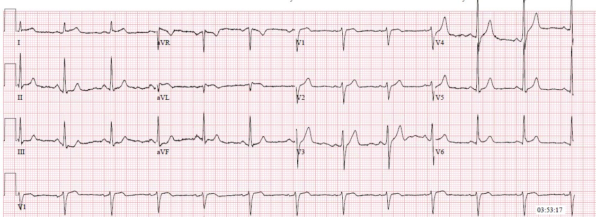
Đây là kết quả đọc bằng máy tính:

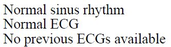
Như vậy, chúng ta có một điện tâm đồ tại khu phân loại được máy tính đọc là bình thường. Đừng làm phiền tôi với cái này, đúng không?
Tôi chắc bạn có thể hình dung gánh nặng nhận thức mà chúng tôi phải chịu trong một đêm như thế. Ở lần xem đầu tiên từ khu phân loại, bác sĩ điều trị chính của tôi và tôi đã phân vân về điện tâm đồ này trong vài phút. Thật đáng kinh ngạc những gì tâm trí làm một cách vô thức khi nó cố gắng tiết kiệm nguồn năng lượng đang cạn dần trong một tình huống căng thẳng.
Rồi chúng tôi bừng tỉnh và hoảng sợ vì suýt nữa đã bỏ sót ca này. Đây rõ ràng là nhồi máu cơ tim do tắc (OMI) thành bên cao cho đến khi chứng minh được điều ngược lại.
Có một chút ST chênh lên (STE) ở I và aVL (dù hơi dưới 1 mm ở mỗi chuyển đạo) kèm ST chênh xuống (STD) soi gương ở III và aVF. Chuyển đạo aVL có sóng Q, mà trong bối cảnh này phải được coi là mới. Không có bằng chứng rõ ràng về tổn thương thành sau hay thành bên, tuy nhiên nếu so sánh với một điện tâm đồ cũ (vốn không có) thì có thể đã thấy được bằng chứng của điều này.
Hãy phóng to I và aVL:

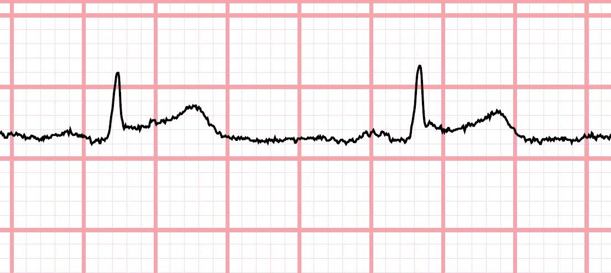

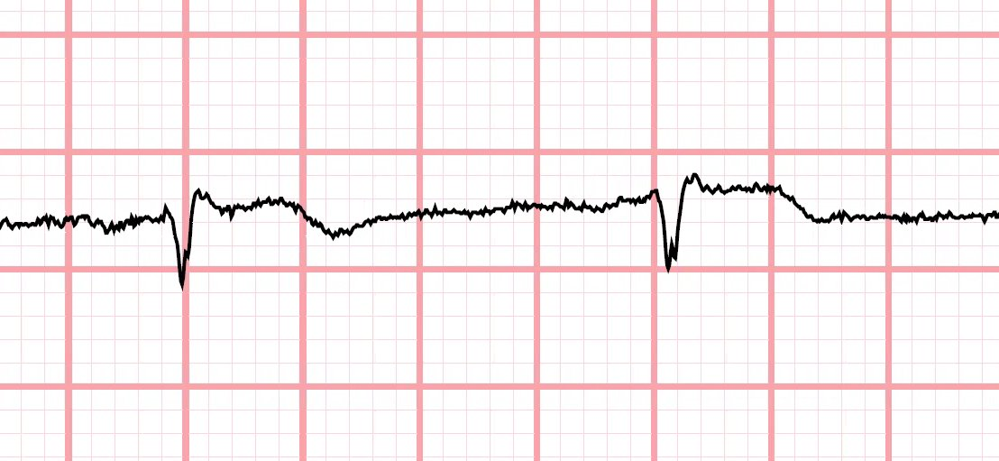
Chúng tôi đưa bệnh nhân vào một trong các phòng hồi sức cấp cứu và ngay lập tức hỏi thêm bệnh sử trong khi ghi lại điện tâm đồ này:

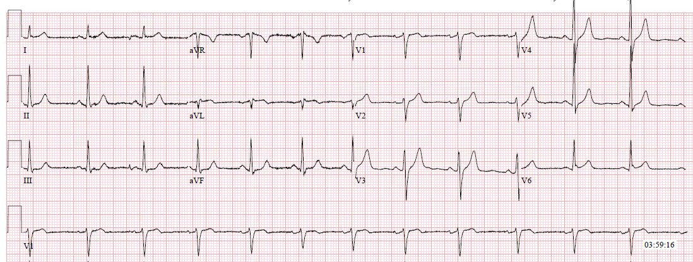
Bệnh nhân 50 mấy tuổi, có tiền sử tăng huyết áp, đái tháo đường, rối loạn co giật và hút thuốc lá, nhưng chưa biết có bệnh động mạch vành. Một ngày trước khi đến viện (khoảng 12 giờ trước khi đến viện), ông mô tả đột ngột đau ngực và khó thở khi đang làm vườn ở sân sau. Ông vào nhà ngồi xuống, và cơn đau giảm dần trong khoảng 30 phút. Ông không còn đau nữa và đi ngủ tối hôm đó mà không có than phiền gì. Sau đó ông thức dậy lúc 3:30 sáng với cơn đau ngực tái phát mức 8/10, sau xương ức, không lan.
Chúng tôi đã kích hoạt phòng thông tim (cath lab).
Bác sĩ nội trú chuyên khoa tim mạch (fellow) lập tức đến bên giường bệnh, nhưng không ấn tượng gì với các điện tâm đồ. Anh ấy viết trong ghi chú của mình rằng “Điện tâm đồ cho thấy tái cực sớm ở I, V2-V3 nhưng không có hình ảnh STEMI rõ ràng.”
Chúng tôi đã làm siêu âm tại giường (hình bên dưới), cho thấy giảm động thành bên theo kết quả đọc trực tiếp của một bác sĩ điều trị chính khoa cấp cứu có chứng chỉ chuyên khoa siêu âm.
Vì biết phải nhìn vào đâu, tôi có thể thấy thành bên cao không dày lên hay di động nhiều ở mặt cắt này.
Ở mặt cắt này, tôi sẽ không thể thấy được rối loạn vận động thành. Thành bên cao có vẻ vẫn dày lên.
Một lần nữa, theo tôi thì thành bên cao ở mặt cắt này có vẻ vẫn dày lên và co bóp. Bác sĩ điều trị chính của tôi, người đã qua chương trình đào tạo chuyên sâu (fellowship) về siêu âm, đã có thể ghi được nhiều mặt cắt giống như mặt cắt đầu tiên ở trên, và chẩn đoán rối loạn vận động thành (WMA) thành bên.
Không may, các bác sĩ tim mạch yêu cầu xét nghiệm troponin tại chỗ (mà bạn sẽ dự đoán là âm tính vào thời điểm này, chưa đến một giờ sau khi khởi phát triệu chứng). Nếu bệnh nhân “may mắn”, các triệu chứng của ông từ ngày hôm trước có thể là do thiếu máu cục bộ đủ kéo dài và đủ nặng để gây tăng nhẹ troponin. Không bệnh nhân nào phải “may mắn” có troponin dương tính thì mới được nghiêm túc xem xét khả năng tắc mạch vành cấp. Nếu bạn chờ troponin chuyển sang dương tính, bạn đang chờ quá lâu. Tắc mạch là một chẩn đoán dựa trên các dấu hiệu lâm sàng, điện tâm đồ và siêu âm tim, VÀ TROPONIN CHỈ CHO CHẨN ĐOÁN KHI ĐÃ QUÁ MUỘN. Quan trọng hơn, lợi ích của can thiệp đối với OMI phải được coi là lớn nhất trong giai đoạn sớm trước khi troponin tăng.
Than ôi, tất nhiên là nó âm tính. Troponin T xét nghiệm tại phòng xét nghiệm, vốn đáng tin cậy hơn, cũng vậy (0,00 ng/mL).
Trong thời gian này, đây là một điện tâm đồ ghi lại khác:

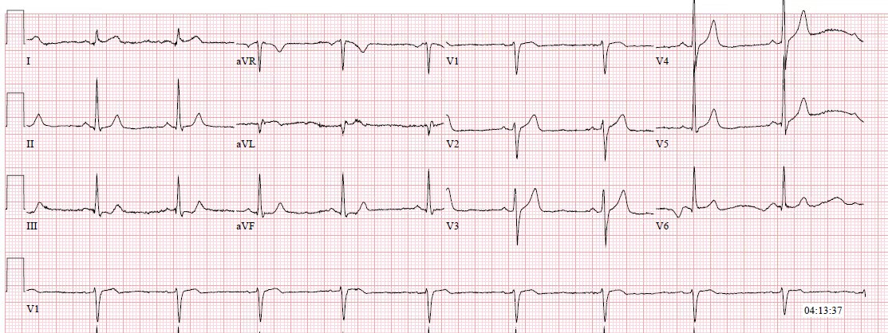
Thật may, cuối cùng bệnh nhân cũng được đưa đi thông tim. Đây là các kết quả:

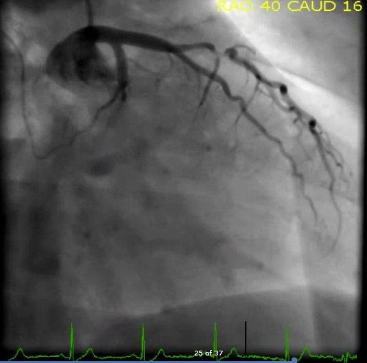

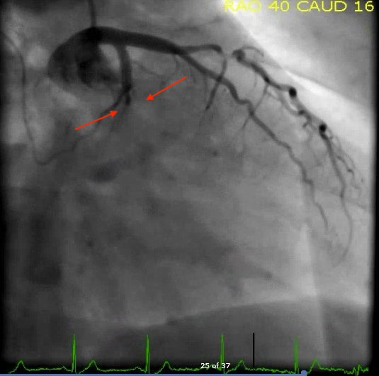

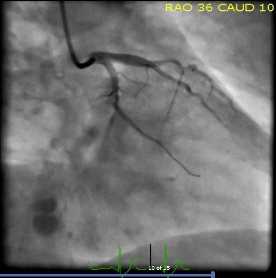

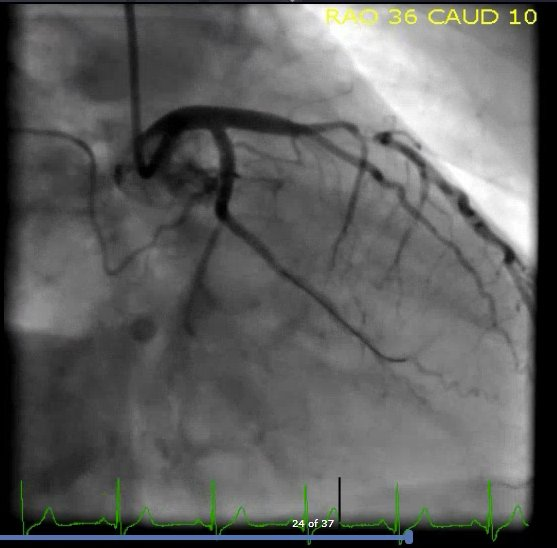
Troponin T đạt đỉnh 7,47 ng/mL. Đây là một ổ nhồi máu cơ tim rất lớn.

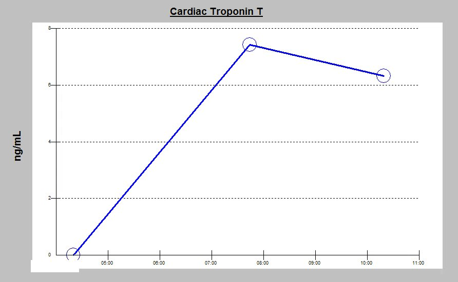
Dựa vào sơ đồ Tiến triển OMI của chúng tôi dưới đây, bạn dự đoán sẽ thấy gì trên các điện tâm đồ sau PCI???

Nếu tái tưới máu thành công, bạn sẽ thấy ST chênh lên và sóng T tối cấp biến mất, đồng thời sóng T đảo ngược phần cuối bắt đầu hình thành ở các chuyển đạo bị ảnh hưởng. Vì OMI thành bên cao do tắc LCX thường liên quan đến cả thành sau, bạn cũng có thể dự đoán sẽ thấy sóng T tái tưới máu thành sau (biểu hiện là sóng T cao ở các chuyển đạo phía trước).

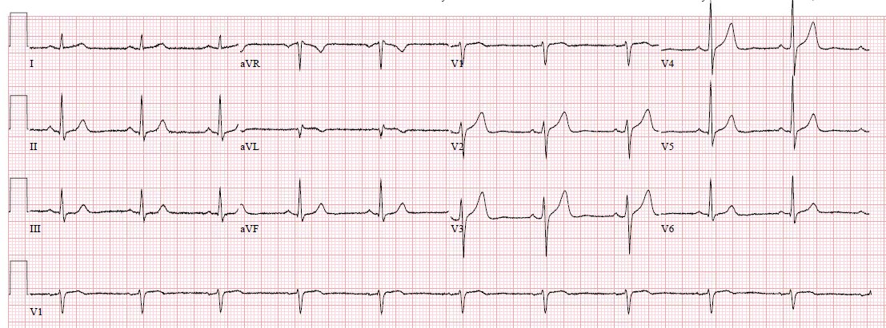
Hai điện tâm đồ ghi lại nữa trong 24 giờ tiếp theo cho thấy diễn tiến của tái tưới máu thành bên cao và thành sau:

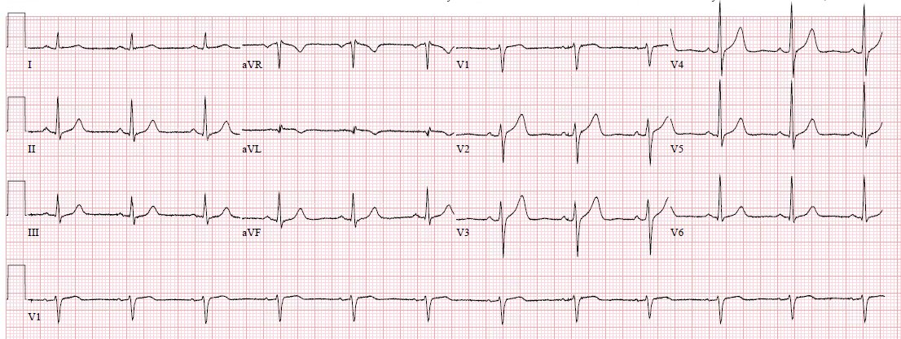

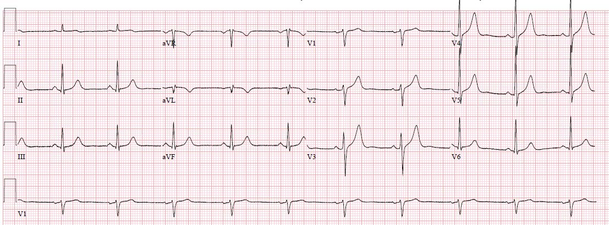
Siêu âm tim chính thức xác nhận rối loạn vận động thành bên. EF là 55%. Bệnh nhân diễn tiến tốt, ít nhất là trong ngắn hạn.
OMI thành bên cao:
Thành bên cao thường được gọi một cách rất đúng là vùng “câm lặng về điện tâm đồ”. Giải phẫu và vị trí đặt điện cực tạo ra điện thế rất nhỏ so với các vùng cấp máu chính khác của động mạch vành. Vì mọi thứ trên điện tâm đồ đều mang tính tương xứng, điều này có nghĩa là các thay đổi ST của OMI thành bên cao sẽ có biên độ tuyệt đối tính bằng milimét nhỏ hơn. Tuy nhiên, xét theo tỷ lệ, chúng vẫn có ý nghĩa.
Khó khăn này khiến OMI thành bên cao trở thành loại OMI bị bỏ sót thường gặp nhất khi dùng tiêu chuẩn STEMI sai lầm. Bạn hãy tự xem bằng chứng trong y văn dưới đây:
Schmitt và cs. Diagnosis of acute myocardial infarction in angiographically documented occluded infarct vessel: limitations of ST-segment elevation in standard and extended ECG leads. Chest 2001
1788 bệnh nhân nhồi máu cơ tim cấp (chẩn đoán dựa trên triệu chứng lâm sàng và CK-MB dương tính) được đưa vào nghiên cứu tiến cứu và tất cả đều được chụp mạch vành cấp cứu. 418 trong số 1788 bệnh nhân này (23%) có tắc mạch vành cấp (ACO). Trong 418 bệnh nhân có ACO, 29% không đáp ứng “tiêu chuẩn STEMI”. Tỷ lệ bỏ sót cao nhất (50%) được ghi nhận ở bệnh nhân tắc động mạch mũ trái cấp. Trong biểu đồ dưới đây, bạn có thể thấy tỷ lệ các trường hợp tắc mạch vành được nhận diện bằng tiêu chuẩn STEMI, chia theo từng động mạch vành và theo việc có dùng thêm các chuyển đạo mở rộng hay không.

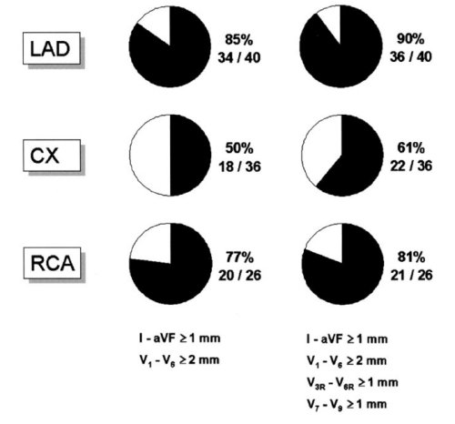
Từ AM và cs. Acute myocardial infarction due to left circumflex artery occlusion and significance of ST-segment elevation. The American Journal of Cardiology 2010
1.500 bệnh nhân liên tiếp bị tắc hoàn toàn hoặc gần hoàn toàn (hẹp trên 90% với dòng chảy TIMI dưới 3) được xác định hồi cứu (post-hoc) từ một cơ sở dữ liệu PCI tiến cứu. Điện tâm đồ của họ sau đó được đọc lại để xác định xem có đáp ứng tiêu chuẩn STEMI hay không (trong nghiên cứu này là ít nhất 1 mm ở 2 chuyển đạo liên tiếp). Ngay cả với sai lệch rất lớn là đã biết trước tất cả các bệnh nhân này đều bị tắc hoặc gần tắc trước khi đọc điện tâm đồ, chỉ có 1.077 (72%) bệnh nhân đáp ứng tiêu chuẩn STEMI, trong khi 423 (28%) không đáp ứng. Điều này đặc biệt đáng chú ý khi xét đến việc chỉ dùng ngưỡng 1 mm làm tiêu chuẩn, kể cả với nhồi máu cơ tim thành trước. Giá trị khuyến cáo hiện nay cho V2 và V3 là 1,5 mm với nữ, 2,0 mm với nam dưới 40 tuổi, và 2,5 mm với nam dưới 40 tuổi. [người dịch: nguyên văn như vậy, nhiều khả năng là lỗi đánh máy; theo định nghĩa toàn cầu, ngưỡng hai milimét áp dụng cho nam từ bốn mươi tuổi trở lên]

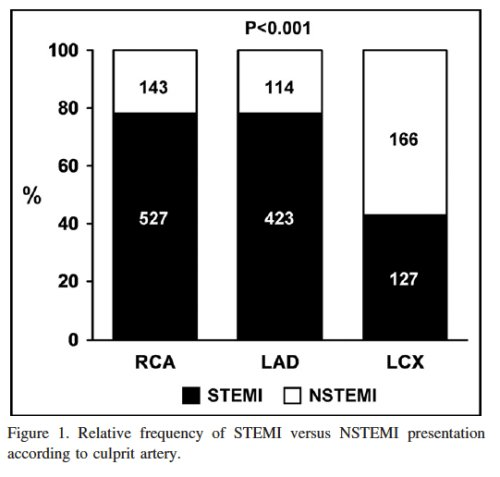
Pride và cs. Angiographic and clinical outcomes among patients with acute coronary syndromes presenting with isolated anterior ST-segment depressions. JACC 2010
Phân tích hồi cứu (post hoc) thử nghiệm ngẫu nhiên có đối chứng TRITON-TIMI-38 so sánh prasugrel với clopidogrel ở bệnh nhân hội chứng vành cấp (ACS) được thông tim. Trong 13.608 bệnh nhân, 1.198 (8,8%) được xác định dựa trên ST chênh xuống đơn độc ở các chuyển đạo phía trước (do đó không đáp ứng tiêu chuẩn STEMI hiện hành của họ). 314 (26,2%) trong số 1.198 bệnh nhân này có động mạch thủ phạm bị tắc hoàn toàn (định nghĩa là dòng chảy TIMI 0 hoặc 1) tại thời điểm thông tim. Vì chỉ khoảng 75% trong số 13.608 bệnh nhân ban đầu thực sự bị nhồi máu cơ tim, 314 bệnh nhân bị tắc thực ra chiếm gần một phần ba nhóm, chứ không phải một phần tư như được trình bày. Động mạch mũ trái là động mạch thủ phạm thường gặp nhất ở những bệnh nhân bị tắc (48%).
Để xem thêm các ca OMI thành bên cao, hãy xem các ca sau:
A 33 year old male with acute back pain radiating to the chest (Nam giới ba mươi ba tuổi đau lưng cấp lan ra ngực)
ST Elevation in I and aVL: do prehospital cath lab activation on these cases? (ST chênh lên ở I và aVL: có kích hoạt phòng thông tim từ trước viện trong những ca này không?)
“Inferior” ST depression: What is the diagnosis? (ST chênh xuống “thành dưới”: chẩn đoán là gì?)
ST depression limited to Inferior leads is reciprocal to high lateral wall and represents STEMI (ST chênh xuống chỉ giới hạn ở các chuyển đạo dưới là thay đổi soi gương của thành bên cao và biểu hiện STEMI)
Để xem thêm các ca OMI mà máy tính đọc là “bình thường”, hãy xem các ca sau:
A 50-something woman with chest pain and 2 “normal” ECGs at triage (Phụ nữ năm mươi mấy tuổi đau ngực và hai điện tâm đồ “bình thường” tại khu phân loại)
A middle-aged woman with chest pain and a “normal” ECG in triage (Phụ nữ trung niên đau ngực và một điện tâm đồ “bình thường” tại khu phân loại)
Chest Pain Diagnosed as Gastroesophageal Reflux (Đau ngực được chẩn đoán là trào ngược dạ dày-thực quản)
Một ca ngừng tim khác:
Chest pain relieved by Maalox and viscous lidocaine (Đau ngực giảm nhờ Maalox và lidocaine dạng gel)
Một ca ngừng tim khác:
Chest pain and a “normal” ECG (Đau ngực và một điện tâm đồ “bình thường”)
Một ca ngừng tim khác:
Subtle Dynamic T-waves, Followed by LAD Occlusion and Arrest (Sóng T động tinh tế, sau đó là tắc LAD và ngừng tim)
An Elderly Male with “Indigestion” (Nam giới cao tuổi bị “khó tiêu”)
Rất dễ bị máy tính dẫn đi lạc hướng….
Should Emergency Physicians be interrupted by ECGs that are read as “Normal” by the computer? (Có nên làm gián đoạn bác sĩ cấp cứu bằng những điện tâm đồ được máy tính đọc là “Bình thường” không?)
Những điểm cần học:
Bạn phải bảo vệ quyền lợi cho bệnh nhân của mình, vì mô hình và các hướng dẫn hiện nay không làm điều đó.
OMI thành bên cao có lẽ là loại dễ bị bỏ sót nhất do điện thế ở các chuyển đạo này nhỏ hơn. Hãy nhớ, mọi thứ đều mang tính tương xứng.
“Máy tính đọc bình thường” là không đủ nếu bạn quan tâm đến việc cứu cơ tim và cứu sống người bệnh. Tiêu chuẩn STEMI cũng vậy. Những con người được đào tạo, quan tâm đến việc cải thiện chăm sóc bệnh nhân nhồi máu cơ tim cấp, có thể làm tốt hơn. Đây là nghề của chúng ta, hãy làm thật giỏi nghề này.
Troponin T tại thời điểm 24 giờ và mối tương quan với kích thước ổ nhồi máu.

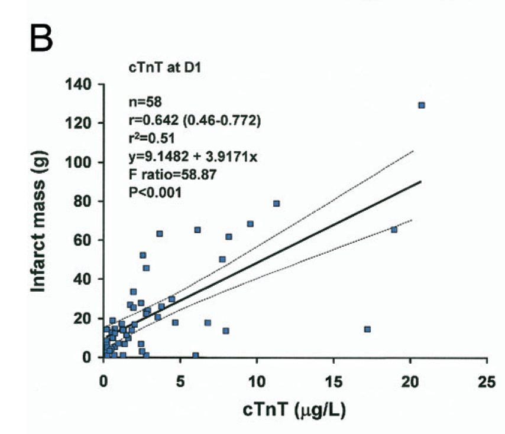
Họ nghiên cứu 31 bệnh nhân STEMI và 30 bệnh nhân NonSTEMI. Khoảng 2/3 số bệnh nhân NonSTEMI có troponin T tại thời điểm 24 giờ dưới 1,0. Khoảng 2/3 số bệnh nhân STEMI có troponin T tại thời điểm 24 giờ trên 1,0. Phần lớn các ca ở đây có khối lượng nhồi máu lớn và troponin cao là STEMI, nhưng nhiều ca là NonSTEMI.
Lưu ý rằng ca của chúng ta ở đây sẽ thuộc nhóm có nồng độ troponin T tại thời điểm 24 giờ cao nhất, mặc dù là một ổ nhồi máu cơ tim nhỏ trên điện tâm đồ.

==================================
BÌNH LUẬN CỦA TÔI, bởi KEN GRAUER, MD (6/10/2018):
==================================
Một ca bệnh tuyệt vời do Dr. Meyers trình bày! Tôi chỉ giới hạn bình luận của mình ở việc củng cố một số khái niệm quan trọng mà anh ấy đã nhấn mạnh. Tôi sẽ đề cập đến điện tâm đồ thứ 1 (ghi lúc 3:53 sáng) — và điện tâm đồ cuối cùng trong ca này (= điện tâm đồ #6, ghi khoảng 24 giờ sau) = Hình 1:

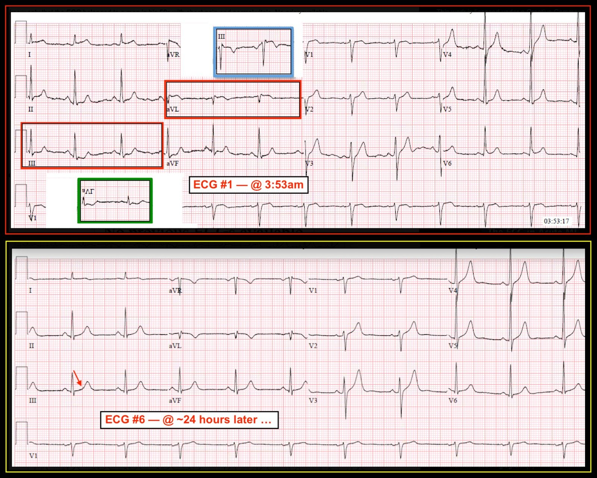
- Như Dr. Meyers đã nói — trong ca này, rất có thể quá dễ dàng bỏ sót STEMI cấp thành bên cao. May mắn thay, ngân hàng dữ liệu “nhận diện hình ảnh” của Dr. Meyers đã ngăn chặn điều đó. Tôi RẤT THÍCH ĐIỂM THEN CHỐT (PEARL) nhấn mạnh mối quan hệ “hình soi gương” kỳ diệu giữa Chuyển đạo III và aVL. Mức ST chênh lên ở chuyển đạo aVL của Điện tâm đồ #1 không lớn. Nhưng lý do chúng ta BIẾT rằng đây là một dấu hiệu thật quan trọng — là HÌNH DẠNG của ST chênh lên ở chuyển đạo aVL chính là hình soi gương ngược chiều chính xác của HÌNH DẠNG đoạn ST chênh xuống ở chuyển đạo III (Tôi đã chồng hình soi gương của chuyển đạo III vào trong khung màu XANH nhạt).
- Nói cách khác — mặc dù mức ST chênh xuống ở chuyển đạo III không lớn — chúng ta BIẾT đây là một dấu hiệu thật quan trọng — vì HÌNH DẠNG của ST chênh xuống ở chuyển đạo III chính là hình soi gương ngược chiều chính xác của HÌNH DẠNG đoạn ST chênh lên ở chuyển đạo aVL (Tôi đã chồng hình soi gương của chuyển đạo aVL vào trong khung màu XANH LÁ).
- Khi đã luyện tập — những hình ảnh soi gương này có thể được nhận ra ngay lập tức. Rất đơn giản, bất cứ khi nào tôi nghi ngờ có thể có STEMI cấp thành dưới hoặc có thể có STEMI cấp thành bên cao — tôi xem sóng ST-T ở các chuyển đạo III và aVL có phải là soi gương ngược chiều nhau hay không … NẾU đúng như vậy — thì tôi coi là OMI cấp cho đến khi chứng minh được điều ngược lại!
- Bằng chứng ủng hộ thêm rằng mức ST chênh lên nhẹ ở chuyển đạo aVL của điện tâm đồ #1 là thật đến từ: i) Thấy rằng có ST chênh lên ở chuyển đạo I trông cấp tính, và xét theo tỷ lệ thì có vẻ nhiều hơn mức dự kiến đối với tái cực sớm đơn thuần; ii) Thấy rằng 2 chuyển đạo thành dưới còn lại ( = II và aVF) cũng có đoạn ST bất thường (đoạn ST thẳng đuỗn ở cả hai chuyển đạo này trên điện tâm đồ #1, kèm góc gập đột ngột tại chỗ nối giữa đoạn ST và sóng T); và, iii) Hỏi Bệnh sử (cho thấy đau ngực nặng mức 8/10 vào ngày hôm trước, và lại đau vào sáng hôm sau ngay trước khi đến khoa cấp cứu) một cách cẩn thận. Việc đánh giá các thay đổi điện tâm đồ có khả năng cấp tính luôn phải được xem xét đặc biệt kỹ lưỡng khi bệnh sử đáng lo ngại, như trong ca này.
- LƯU Ý: Một lý do khác khiến mức ST chênh lên ở các chuyển đạo I và aVL có thể tương đối khiêm tốn — là biên độ QRS ở các chuyển đạo này tương đối nhỏ. Đặc biệt khi biên độ QRS khiêm tốn — HÌNH DẠNG của sóng ST-T quan trọng hơn “mức độ”.
Cách tốt nhất để mài giũa kỹ năng đọc điện tâm đồ của bạn — là theo dõi lâm sàng một cách chặt chẽ.
- Như Dr. Meyers đã nói — chuyển đạo aVL trên Điện tâm đồ #6 (ghi khoảng 24 giờ sau) cho thấy các thay đổi tiến triển. Nghĩa là, giờ đây đoạn ST ở chuyển đạo aVL có dạng vòm (coving) rõ hơn (so với những gì thấy trên điện tâm đồ #1) — và, sóng T đảo ngược giờ rõ ràng sâu hơn.
- Các thay đổi ST-T soi gương ở các chuyển đạo dưới cũng đã tiến triển trên điện tâm đồ #6, do tái tưới máu. LƯU Ý: NẾU còn bất kỳ nghi ngờ nào về đoạn ST thẳng đuỗn mà tôi đã nhắc đến ở các chuyển đạo dưới của điện tâm đồ #1 — thì giờ đây hẳn đã rõ ràng rằng thay vì góc gập đột ngột — chỗ nối giữa đoạn ST và sóng T ở các chuyển đạo dưới của điện tâm đồ #6 giờ đã trơn tru và thoai thoải (mũi tên ĐỎ).
- Sẽ rất dễ bỏ qua các thay đổi tiến triển ở các chuyển đạo ngực trừ khi so sánh từng chuyển đạo một. Dùng Hình 1 để thuận tiện cho việc so sánh này — chẳng phải giờ đã rõ ràng là kích thước sóng T nhọn ở các chuyển đạo V2, V3, V4 và V5 lớn hơn so với trên điện tâm đồ #1 sao? (Nhớ đo chiều cao sóng T trên mỗi bản ghi khi so sánh từng chuyển đạo!) Sự tăng biên độ sóng T nhọn này về cơ bản là hình ảnh soi gương của sóng T đảo ngược sâu hơn mà ta thấy ở chuyển đạo aVL của điện tâm đồ #6 — và nó phản ánh tái tưới máu thành sau.
- Cuối cùng (Vượt ra ngoài phần cốt lõi! ) — Lưu ý rằng KHÔNG còn ST chênh lên ở chuyển đạo V6 nữa! Nhận ra dấu hiệu hồi cứu tinh tế này cho chúng ta biết rằng ST chênh lên tinh tế có trên điện tâm đồ #1 là thêm một biểu hiện nữa của tắc LCx cấp. Cũng lưu ý rằng hình dạng của đoạn ST chênh lên ở chuyển đạo V6 trên điện tâm đồ #1 trông giống hình dạng ST chênh lên ở chuyển đạo I của điện tâm đồ #1, nhưng lại khác với hình dạng đoạn ST ở V4 và V5 trên điện tâm đồ #1. Dấu hiệu ST chênh lên ở chuyển đạo V6 này phù hợp với tình trạng tắc LCx cấp đã gây ra các thay đổi tương tự ở các chuyển đạo bên cao I và aVL.